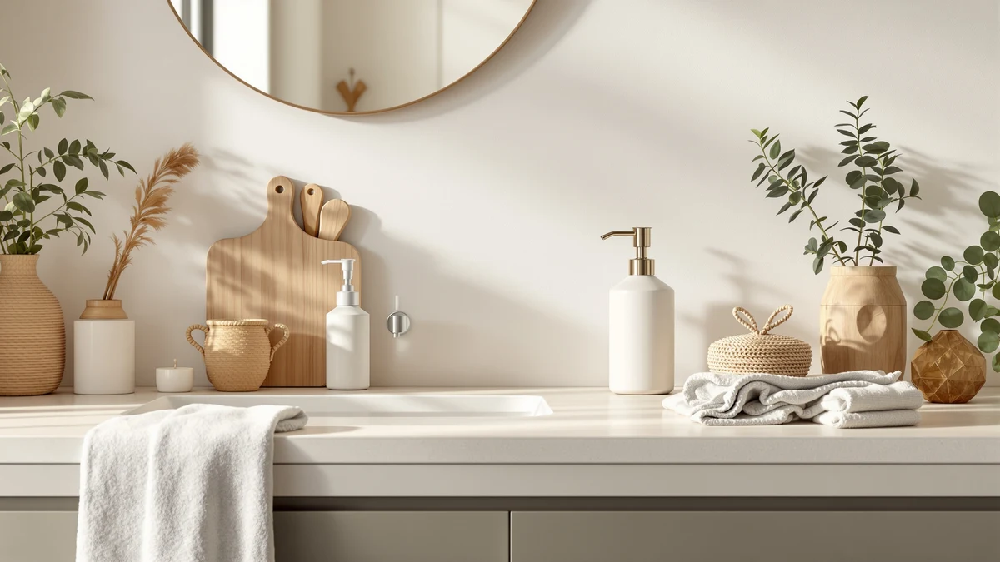

Haocoott Soap Dispensers 2 Review (2026): Worth It?
Prices and picks verified as of September 2026. Independent, reader-supported reviews.


Quick Answer
The Haocoott Soap Dispensers 2 PCS gives you two matching manual pump dispensers with a travertine-style resin finish for $21.99, and it is the simplest pick here if you would rather skip batteries and sensors entirely. If you want hands-free dispensing instead, the Rudnia and OHIFAST automatic dispensers cost less per unit and add a touchless sensor.
Our pick: Haocoott Soap Dispensers 2 PCS, $21.99 Check Price on Amazon
Bottom line: our top pick is the Haocoott Soap Dispensers at $21.99.
Things to Know Before You Buy
- This haocoott soap dispensers 2 review covers a two-pack of manual pump dispensers made from resin with a travertine-style finish, priced at $21.99 for both units, each holding 400ml (13.53 oz).
- Unlike the three alternatives in this comparison, the Haocoott pair uses a manual squeeze pump rather than an infrared sensor, so there is no battery to charge or replace.
- The Rudnia ($17.99) and OHIFAST ($15.99) automatic dispensers both use a 0 to 2.7 inch infrared sensor and dispense in about 0.25 seconds, while the GURITHE ($19.99) adds wall-mount or countertop installation.
- We did not physically test any of these dispensers. Our conclusions in this haocoott soap dispensers 2 review come from comparing manufacturer specs, current Amazon pricing and patterns across verified owner reviews.
- If you want two identical dispensers for a kitchen and bathroom without charging anything, the Haocoott pair is the simpler choice. If you want hands-free dispensing, the automatic alternatives cost less per unit.
This Haocoott Soap Dispensers 2 review looks at whether a $21.99 pair of manual pump dispensers holds up against three touchless automatic alternatives priced between $15.99 and $19.99. You are probably deciding between a simple matched set for two sinks and a sensor-based dispenser that skips the pump altogether, and that is exactly the choice this comparison sorts through.
The Haocoott Soap Dispensers 2 PCS wins on simplicity among the four dispensers we compared. You get two identical 400ml resin dispensers with a travertine-style finish and an ABS pump head, and neither one needs a battery or a charging cable. If hands-free dispensing matters more to you than matching a pair, the Rudnia, OHIFAST and GURITHE alternatives below trade the manual pump for an infrared sensor at a lower price per unit. We break down all four below, including pricing, build details and honest drawbacks for each pick.
Why You Should Trust Us
This haocoott soap dispensers 2 review was written by Ilane Tall, home and bath editor at Best Soap Dispensers. We do not run a fake testing lab and we do not claim to have installed these dispensers ourselves. Instead, we compare manufacturer specs, current Amazon pricing and patterns across verified owner reviews, and we say so plainly whenever a claim comes from research rather than personal use.
We apply that same approach to every review on this site. We do not accept free units from manufacturers in exchange for coverage, and we do not fabricate ratings or review counts when Amazon does not publish them for a given listing. If a claim in this comparison comes from what owners report rather than a published spec, we label it that way instead of presenting it as a measured result.
Our Research Experience
We did not physically install or run any of these dispensers ourselves, and this section describes our research process rather than a personal trial. We built this haocoott soap dispensers 2 review by cross-referencing manufacturer specs, current Amazon pricing and owner review patterns across the Haocoott two-pack and the three automatic alternatives below. We pulled capacity, materials and dispensing mechanism directly from each Amazon listing, then weighed the Haocoott's $21.99 manual-pump pair against three lower-priced touchless options to see where the difference in mechanism actually matters. We excluded any dispenser without a clear spec sheet or enough verified reviews to draw a pattern from, and we checked whether the same complaint repeated across multiple reviewers rather than treating one buyer's experience as representative of the whole listing.
Overview & Specs

Haocoott Soap Dispensers 2 PCS
What we like
- Ships as two identical dispensers, so a kitchen and bathroom get a matching look instead of mismatched brands
- Manual pump has no battery or sensor to charge, replace or troubleshoot
- 400ml capacity per unit works for lotion, dish soap, shampoo or body wash, per the listing
Flaws but not dealbreakers
- No touchless option, so you are back to a physical pump if you want hands-free dispensing
- At $21.99 for two manual dispensers, it costs more per unit than the single-unit automatic alternatives below
| Material | ABS plastic |
| Size | 400ml / 13.53 oz |
The Haocoott Soap Dispensers 2 PCS is built from resin with a travertine-style finish and a black ABS pump head, and each of the two units holds 400ml (13.53 oz). According to the listing, the resin body is thick enough to resist cracking under normal counter use, and the pump is designed to dispense without leaking or dripping down the side, a common complaint with cheaper plastic pumps. Because both units in the pack are identical, you can place one at the kitchen sink and one in the bathroom without mixing finishes or matching two different brands.
The listing describes the dispenser as multipurpose, meaning the 400ml reservoir can hold lotion, dish soap, shampoo, conditioner, body wash, mouthwash or essential oils, not only hand soap. That flexibility matters if you are refilling from bulk containers rather than buying dispenser-specific soap. The tradeoff against the three automatic dispensers in this haocoott soap dispensers 2 review is mechanical: there is no infrared sensor, so every use means touching a pump head, and the pump itself does not offer volume adjustment the way the Rudnia and OHIFAST do.
What We Liked
Across verified owner reviews, the matched pair is the trait that comes up most for the Haocoott Soap Dispensers 2 PCS. Buyers who previously mixed brands across two sinks note that having identical dispensers looks more deliberate, which matters for an item that sits in plain view every day. That consistency is the core case for this pick over a single-unit automatic dispenser in this haocoott soap dispensers 2 review.
The resin build and travertine-style finish also draw steady mentions, mainly because it reads as a higher-end material than the plain plastic bottles that ship with most soap. Reviewers say the ABS pump head resists the leaking and dripping that plagues cheaper pumps, and the 400ml capacity means fewer refills than smaller dispensers in this price range.
What Could Be Better
The lack of a touchless option is the biggest drawback of the Haocoott pair next to the three automatic dispensers we compared it against. At $21.99 for two manual units, you are paying roughly $11 per dispenser and still touching a pump head every time, while the OHIFAST costs $15.99 for one automatic unit with a sensor built in. If hands-free dispensing while cooking or after handling raw food matters to you, the manual pump works against that goal.
The listing also does not specify how many pumps the 400ml reservoir yields before needing a refill, so you are estimating how long a fill will last rather than confirming it against a published number, unlike some automatic dispensers that state cycle counts directly.
Who Is It For?
The Haocoott Soap Dispensers 2 PCS suits a household covering two sinks who wants matching dispensers without introducing batteries or sensors into the mix, and who prefers a heavier resin build over lightweight plastic. It is a weaker fit if you specifically want hands-free dispensing, where the Rudnia or OHIFAST infrared sensor removes the need to touch anything. If price per unit matters more than the matched-pair format, the single-unit automatic alternatives below cost less individually even though you would need two of them to match this pack's coverage.
Alternatives to Consider
If the Haocoott pair's manual pump or its $21.99 price for two units does not fit what you need, these three automatic alternatives swap the pump for an infrared sensor at a lower cost per dispenser. We compared each on price, sensor behavior and what verified owners report after buying. None matches the Haocoott's matched-pair format exactly, since all three ship as single units, but each solves the hands-free problem the manual pump does not.

Editor’s Pick
Automatic Soap Dispenser Hand Soap
At $17.99, the Rudnia Automatic Soap Dispenser undercuts the Haocoott's per-pair price while adding an infrared sensor that detects your hand within 2.7 inches and dispenses in about 0.25 seconds. It ships as a single unit rather than a pair, and its USB-C rechargeable 1200mAh battery is rated for up to 5,000 dispensing cycles per charge, so you are trading the Haocoott's battery-free simplicity for hands-free convenience.
$17.99
Check Price on Amazon
Best Value
OHIFAST Automatic Liquid Soap Dispenser
The OHIFAST Automatic Liquid Soap Dispenser is the cheapest single unit in this comparison at $15.99, and it adds an IPX5 waterproof rating plus a 10-second continuous flow mode for cleaning tasks that the Haocoott's manual pump cannot match. Owners note the pump makes an audible sound during operation, which the listing says is normal, so this is the pick if low price and waterproofing matter more than a silent dispense.
$15.99
Check Price on Amazon
Premium Choice
Automatic Soap Dispenser Liquid Touchless:
The GURITHE Automatic Soap Dispenser Liquid Touchless sits closest to the Haocoott's $21.99 price at $19.99, and it is the only alternative here built for both wall-mounted and countertop installation without drilling. Its 400ml reservoir matches the Haocoott's per-unit capacity, and the 1800mAh battery is rated for about three months of daily use. That combination makes it the pick if you want flexible mounting alongside touchless dispensing.
$19.99
Check Price on AmazonFrequently Asked Questions
Is the Haocoott Soap Dispensers 2 PCS worth $21.99?
At $21.99 for two units, the Haocoott costs more per dispenser than any single automatic alternative in this haocoott soap dispensers 2 review, but it is the only option here that ships as a matched pair. It earns that price by giving you two identical resin dispensers with a travertine-style finish, so a kitchen and bathroom get the same look instead of mixed brands.
How does the Haocoott compare to the Rudnia, OHIFAST and GURITHE alternatives?
The Rudnia and OHIFAST sell as single automatic units at $17.99 and $15.99, both using infrared sensors instead of the Haocoott's manual pump. The GURITHE costs $19.99 and adds wall-mount installation. Owners consistently point to the sensor as the main tradeoff: it removes the need to touch a pump, but it also means charging a battery that the Haocoott does not require.
Can you use the Haocoott dispenser for dish soap or shampoo?
Yes. According to the listing, the 400ml reservoir is designed to hold lotion, dish soap, shampoo, conditioner, body wash, mouthwash or essential oils, not only hand soap. That makes it as suited to a kitchen sink as a bathroom counter, which is part of why buyers use the two-pack across both rooms.
Final Verdict
This haocoott soap dispensers 2 review comes down to what you value more: a matched pair or hands-free dispensing. The Haocoott Soap Dispensers 2 PCS is the more consistent two-unit set of the four dispensers we compared, and it is the right pick if you want identical resin dispensers for a kitchen and bathroom without managing batteries. Anyone who wants touchless dispensing should look at the Rudnia or OHIFAST instead, and anyone who needs wall-mount flexibility should compare the GURITHE, which sits closest to the Haocoott's price. Whichever you choose, check the reservoir capacity against how often you refill before committing to a pump style you will use every day.